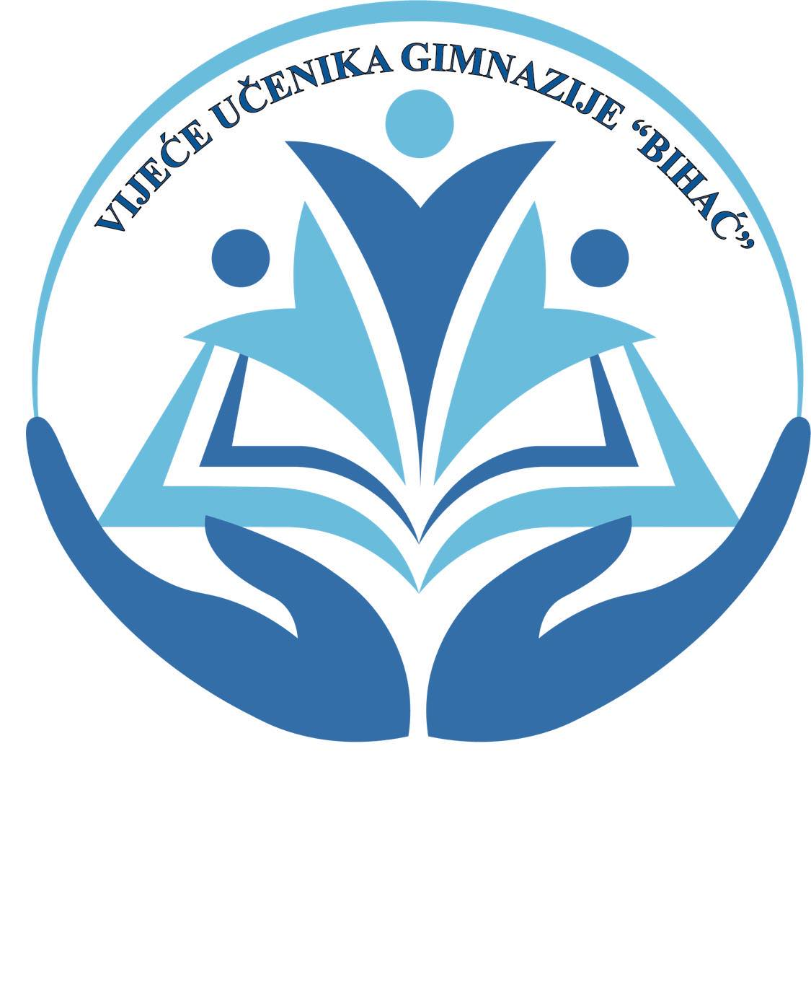

25. April 2022.
KOSARKA
Kantonalno takmičenje u košarci za srednje škole održano je danas u Cazinu, a mi imamo još jedan razlog za slavlje. Naime, košarkaški tim Gimnazije "Bihać" pod vodstvom profesora Jasmina Budimlića odigrao je izvrsne utakmice i zasluženo zauzeo prvo mjesto. Tako je naša škola postala šampion Unsko-sanskog kantona u košarci za srednjoškolce.
27. April 2022.
NOGOMET
Gradsko takmičenje u malom nogometu za srednjoškolce održano je danas u sali Mješovite elektrotehničke škole u Bihaću. Naši učenici osvojili su PRVO MJESTO i ovim izvrsnim plasmanom ostvarili pravo na učešće na kantonalnom takmičenju. Čestitke svim članovima tima JU Gimnazije "Bihać" i profesorici Ameli Balić na sjajnom rezultatu!

23. Maj 2022.
ATLETIKA
Na Kantonalnom takmičenju u atletici Fadil Komić i Hana Goretić su osovojili 1.mjesto u trčanju na 400 m i 1000m. Takmičenje se održalo 24.5.2022.godine u Cazinu. Također je reprezentacija Bihaća sveukupni pobjednik takmičenja USK-a. Čestitamo našim učenicima i želimo im puno sreće u nastavku takmičenja.
21. Februar 2023.
PODUZETNISTVO
S.T.A.R. Challenge je državno takmičenje u preduzetništvu za srednjoškolce iz cijele BiH, a tradicinalno se održava od 2013. godine. Ovogodišnji S.T.A.R. Chellenge je podržan od strane Ambasade Italije u BiH. Gimnaziju su predstavljale 3 učenice: Fatima Avdić, Dalila Majetić i Sarah Budimlić. Učenica III a razreda Dalila Majetić je zauzela 1. mjesto sa svojim timom.

28. Februar 2023.
ATLETIKA
Povodom obilježavanja 763.rođendana grada Bihaća, organizirana je ulična utrka za učenike osnovnih i srednjih škola, seniore, veterane i rekreativce. Učenici naše škole su ostvarili odlične rezultate
19. Januar 2023.
JUDO
Elma Poprženović, učenica četvrtog razreda JU Gimnazije "Bihać", proglašena je najuspješnijom seniorkom Sportskog saveza USK-a i Grada Bihaća kao dobitnica zlatne medalje na ekipnom Balkanskom prvenstvu u judu.
18. Novembar 2022.
Vijeće učenika pripremilo je niz aktivnosti od kojih je prva postavljeni Slatki kutak u holu naše škole. Učesnici su se počastili kolačima, toplim napicima, sokovima i voćem. Zahvaljujemo se svim članovima, učenicima i profesorima koji su na bilo koji način dali doprinos u ovoj aktivnosti i nesebično pomogli realiziranje predstojećih projekata Vijeća učenika JU Gimnazije "Bihać".
8. Mart 2023.
Naše vijeće je i ove godine odlučilo obilježiti Međunarodni dan žena dijeljenjem karanfila i slatkih poslastica u prostorijama škole. Cilj aktivnosti je bio izmamiti osmijehe i pridati mali znak pažnje svim uposlenicima, ljepšeg spola, naše škole.
13. Februar 2023.
Zahvaljujući uvijek dobro raspoloženim gimnazijalcima, profesorima i uposlenicima naše škole u petak je đ organizirana akcija prikupljanja pomoći za stradale u zemljotresu koji je zadesio Siriju i Tursku.